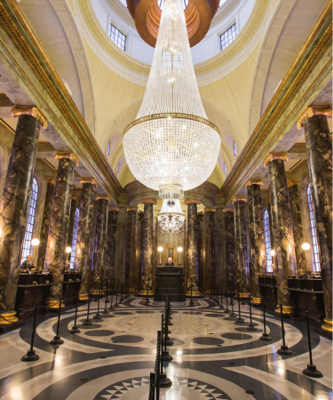
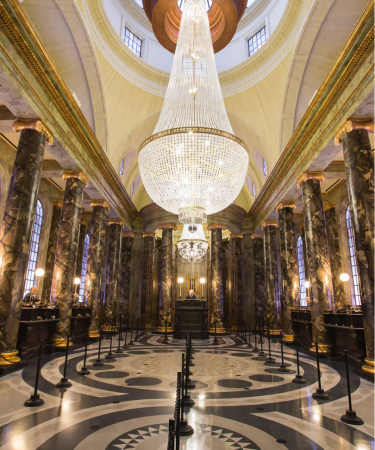
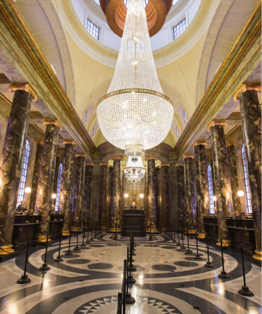

Competencia directa a Disney, Universal gena terreno a fuerza de atracciones y zonas increíbles dentro de sus parques.
 

Competencia directa a Disney, Universal gena terreno a fuerza de atracciones y zonas increíbles dentro de sus parques.
A diferencia de la competencia, los tres parques, más el CityWalk de Universal comparten el mismo parking. Esto quiere decir que si te hospedas en un hotel fuera de Universal, donde tienes que ir a los parques en auto, es tan sencillo como dejar el vehículo en el lugar y elegir a que parque te vas a dirigir.
Otra opción es ir en taxi o Uber. En este caso es más sencillo todavía, ya que te dejarán en la "zona de descarga de pasajeros" que está exactamente debajo de los controles de seguridad.
En caso de que te estés alojando en uno de los hoteles de Universal, tiene la opción de ir a pié, ya que los hoteles se encuentran muy cerca de los parques!.
Una vez que paasamos el control de seguridad, tendremos que caminar por una pasarela larga que nos lleva hacia el sector del Universal CityWalk, y luego de eso hasta la entrada del parque.
Es fácil diferenciar la entrada al parque porque vamos a ver en la puerta el icónico globo terraqueo de Universal que se ve en el inicio de todas sus películas.
En el ingreso, propiamente dicho, tendrán que escanear sus tickets y asociarlos con una huella digial, la misma que utilizarán todos los días que ingresen al parque.
Un punto importante es que, en todo el parque, tendrán cobertura de wifi gratis para conectar sus dispositivos.
Si bien Universal tiene varias zonas muy interesantes, y muchas atracciones que no se pueden perder, la realidad es que el parque puede recorrerse tranquilamente en un día de visita.
La dimensión no es tan extensa como los parques de Disney, asique no tendrán que caminar tanto para ir de una zona a otra, este es un punto importante por el cual alcanza una visita de un día. De todas maneras, la recomendación personal es un ticket de tres días para visitar los dos parques. De esta forma podran hacer cada parque tranquilo, y tener un día extra (importante contratar park-to-park) para volver a los favoritos, o recorrer partes que quedaron pendientes.
Por la calle principal luego del ingreso al parque nos vamos a encontrar con atracciones como Transformers: The Ride 3D, Shrek 4D, Dispicable Me Minions Mayhem, y si seguimos un poco más nos vamos a encontrar con uno de lo sellos distintivos de este parque: Hollywood Rip Ride Rockit, la montaña rusa más alta del parque.
Continuando hacia la "zona New York" del parque, vamos a poder acceder a The Mummy, una de las mejores montañas rusas bajo techo de todo Orlando, un must do.
La joya del parque la vamos a encontrar en el área de Harry Potter. Empieza con la costanera de Londres, está la estación de Kings Cross, y el ingreso a Diagon Alley. Dentro de esté último lugar tenemos uno de los mejores restaurantes del parque: Leaky Cauldron, sacado directamente del mundo del mago más famoso, es alucinante. Además de tener varias tiendas para comprar todo tipo de cosas (varitas, golosinas, juegos, libros, etc) también vamos a poder visitar la tienda de los Hermanos Weasly, y la atracción estrella: Escape From Gringgots, un simulador/montaña rusa que te dejará con la boca abierta.
Luego de la zona Harry podemos ir al sector de Los Simpsons. Acá vamos a poder entrar a la atracción de The Simpson Ride, y visitar lugares clásicos como Moe's Tabern, un stand de Duff, un foodtrack del Hombre Abejorro y podemos comer una Krosty Burguer en los locales de fast food.
